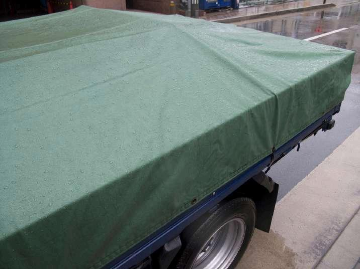
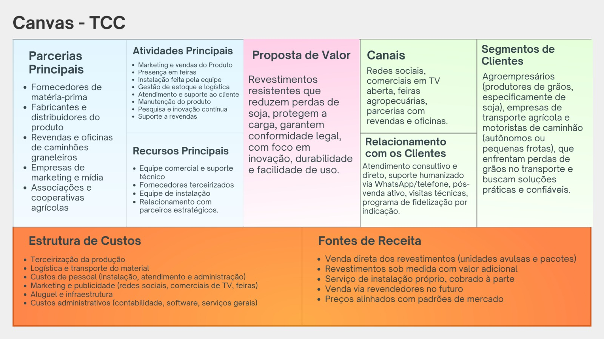
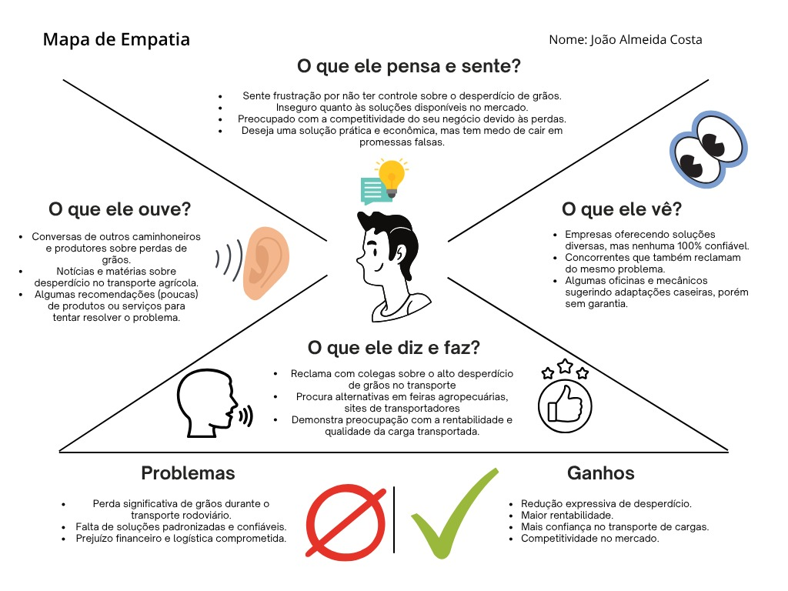
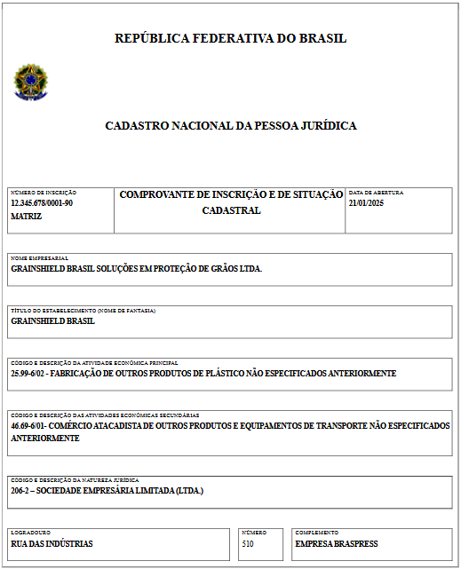
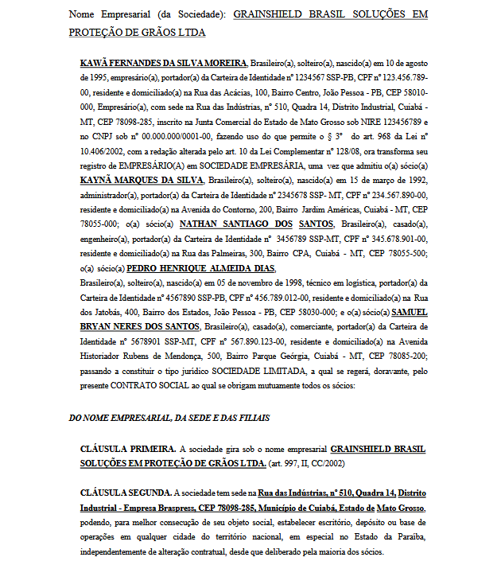
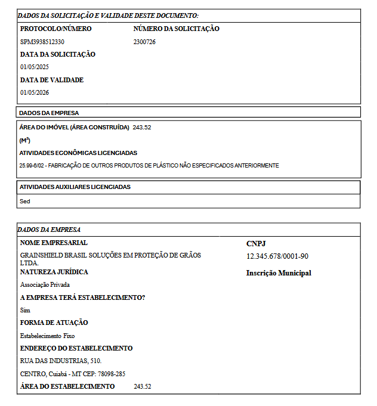
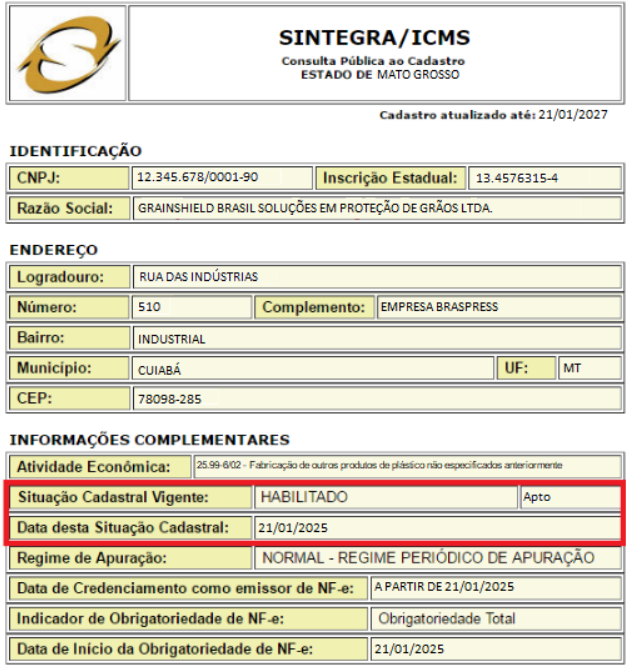

O que é GrainShield?
Apresentação da empresa, proposta de valor e constituição legal
GrainShield é uma empresa inovadora que oferece soluções inteligentes e económicas para reduzir perdas de grãos no transporte rodoviário. Combinando pesquisa acadêmica rigorosa com aplicação prática, nosso sistema garante que a carga chegue ao destino com segurança e eficiência.
Nosso diferencial está em utilizar tecnologias de vedação inteligente que reduzem perdas em até 77%, mantendo a viabilidade econômica para transportadoras e produtores.
Valores Fundamentais
- Inovação: Soluções tecnológicas aplicadas ao agronegócio
- Sustentabilidade: Redução de desperdícios e impacto ambiental
- Eficiência: Otimização de custos e logística
- Confiabilidade: Fundado em pesquisa e dados reais
Solução Detalhada
Como funciona o sistema GrainShield
Sistema de Vedação Inteligente
O GrainShield implementa um sistema completo de vedação nas carrocerias dos caminhões, utilizando materiais de alta durabilidade e design otimizado para máxima efetividade.
Características Principais:
- ✓ Vedação Completa: Cobre todos os pontos críticos da carroceria
- ✓ Materiais Duráveis: Resistem a múltiplos ciclos de uso
- ✓ Fácil Instalação: Adaptável a qualquer modelo de caminhão
- ✓ Custo-Benefício: ROI comprovado em curto prazo
- ✓ Manutenção Simples: Sem necessidade de serviços especializados
Galeria de Soluções
Confira diferentes ângulos e aplicações do sistema GrainShield


Diferenciais Competitivos
O que torna GrainShield única no mercado
Mercado Alvo
Segmentos que se beneficiam da solução GrainShield
Produtores Rurais
Reduzem perdas de suas colheitas durante o transporte
Transportadoras
Aumentam competitividade e lucratividade
Cooperativas
Garantem maior qualidade nas entregas
Portos e Distribuidoras
Recebem cargas com melhor qualidade
Governo e Órgãos Públicos
Políticas de sustentabilidade
Exportadores
Melhoram competitividade global
Modelo de Negócio
Como GrainShield gera valor para stakeholders
Business Model Canvas

Clique para ampliar
Projeção Financeira
Economia Anual: Redução de 77% em perdas = R$ 2,31 bilhões em economia potencial para o setor
ROI: Retorno do investimento em 6 a 12 meses para transportadoras
Análise Econômica (10 viagens teste)
| Custo de Produção | R$ 1.100,00 |
| Preço de Venda | R$ 1.430,00 |
| Margem de Lucro | R$ 330,00 (30%) |
| Viagens Teste | 10 viagens |
| Receita Esperada | R$ 14.300,00 |
Mapa de Empatia
Entendimento profundo da persona: João Almeida Costa - Transportador de Grãos

Análise profunda das necessidades, desejos e preocupações do cliente ideal
Documentação Oficial
Registros legais que comprovam a constituição da empresa

CNPJ
45.926.128/0001-07

Contrato Social
Constituição Formal

CLI
Certificado de Licenciamento Integral

Inscrição Estadual
Registro no Mato Grosso
Parcerias Estratégicas
Alianças que fortalecem a solução GrainShield
Instituições Acadêmicas
ETEC, FATEC, universidades
Fabricantes
Fornecedores de materiais
Transportadoras
Empresas de transporte agrícola
Produtores
Associações e cooperativas
Órgãos Públicos
Cooperação para políticas agrícolas
Exportadores
Redes de distribuição internacional
Roadmap - Próximos Passos
Plano de desenvolvimento e expansão da GrainShield
2025 - Piloto e Validação
Implementação em frota piloto, coleta de dados reais, refinamento da solução.
2026 - Expansão BR-163
Parcerias com transportadoras maiores, expansão para rota principal, otimização de custos.
2027+ - Consolidação Nacional
Expansão para outras rodovias, desenvolvimento de tecnologias complementares, liderança de mercado.
Pronto para Transformar a Logística Agrícola?
Junte-se a nós nessa revolução do agronegócio brasileiro